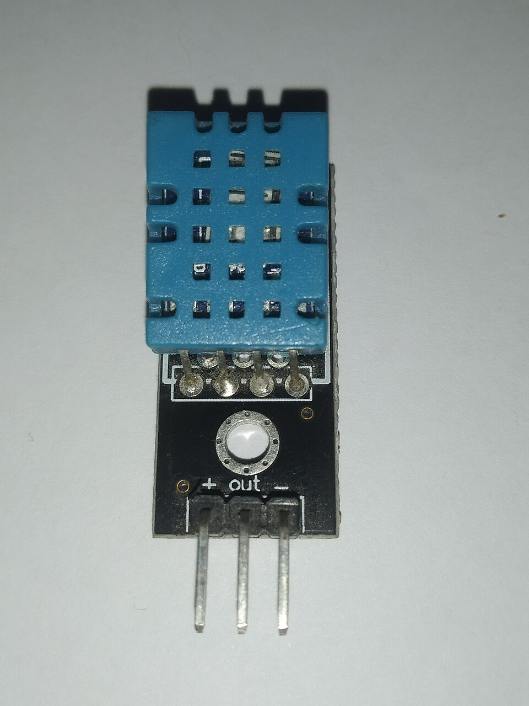
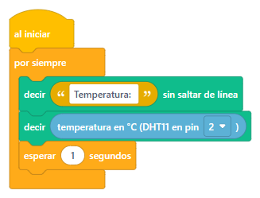
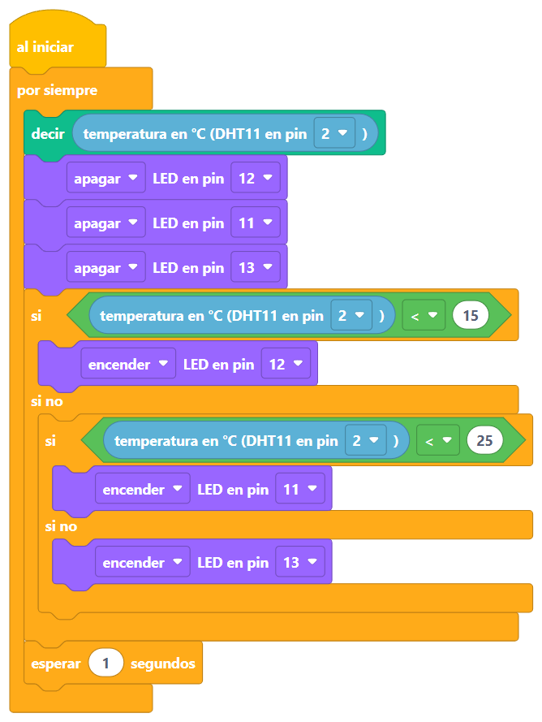
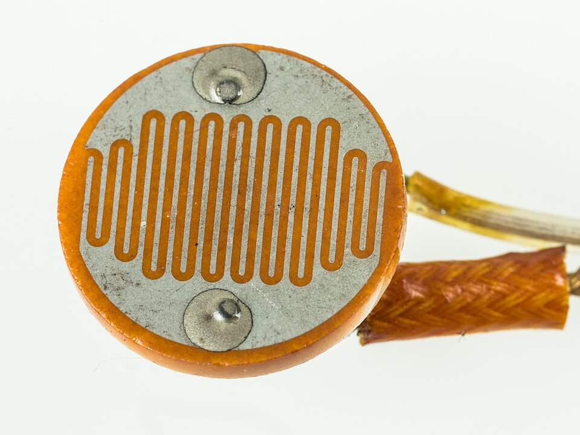
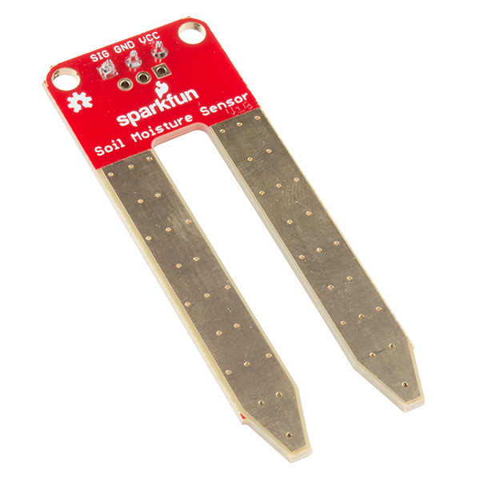
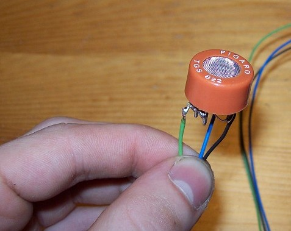
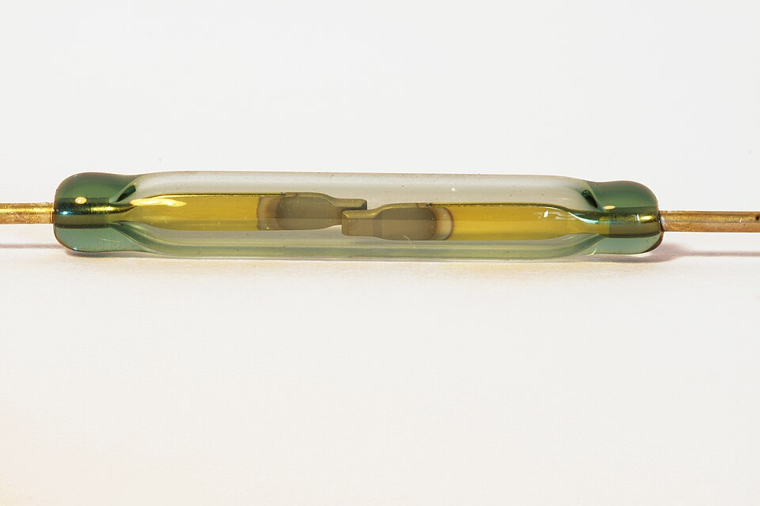

Tu Arduino ya ve en la oscuridad. Hoy aprende a sentir el calor… y te lo cuenta por su viejo amigo, el monitor serie. 💬
Antes de partir
Lo que ya sabemos 🧠
🦇 Sesión 7: el murciélago
El HC-SR04 es un sensor: grita (TRIG) y escucha el eco (ECHO)
El bloque «distancia en cm» cronometra el eco y hace la cuenta por ti
Se divide entre 2: el grito va y vuelve ↔️
Un número en una variable sirve para decidir con «si»
🧰 De antes, para hoy
Monitor serie: el bloque «decir» (sesión 4)
«si / si no» para decidir según un número (sesiones 4 y 7)
Variables: cajitas que guardan un número (sesiones 4 y 7)
El LED: actuador de luz, con su resistencia (sesión 3)
Hoy tu Arduino siente el calor… y nos lo cuenta por el monitor serie 🌡️💬
El sensor de hoy
El DHT11: calor y humedad 🌡️💧

La cajita azul con ventanitas Foto: Edwiyanto · CC BY-SA 4.0
🌡️ Mide la temperatura: cuántos grados hace.
💧 Y de regalo, la humedad: cuánta agua flota en el aire.
🗣️ Es un sensor conversador: no manda un simple voltaje, manda un mensajito con números. Para entenderlo hace falta una librería… que en Bloquino ya viene puesta. 🎁
Tres patitas, marcadas en el módulo: S (la señal: el mensajito, al pin 2), + (5V) y − (GND).
Un viejo conocido
El monitor serie 💬
🔍 Monitor serie · 9600 baudios
— aprieta el botón para escuchar —
Tres bloques y listo
Los bloques del termómetro 🧩

La temperatura viene con coma, como 21.5: casi nunca es redondita. Al simular, cámbiala en el panel del sensor. Proyecto: sketches/sesion-08/termometro/termometro.bloquino
Frío, templado o caluroso
Los umbrales: ¿dónde está la raya? 📏

Un «si» dentro del «si no» es una segunda pregunta que solo se hace si la primera dio «no». Puedes meter todas las que quieras, una dentro de otra. Proyecto: sketches/sesion-08/semaforo_termico/semaforo_termico.bloquino
¡Manos a la obra!
Los tres cables del termómetro 🔌
⭐ Proyecto de la sesión
El termómetro semáforo 🌡️🚦
Junta todo: el sensor mide, el monitor serie cuenta, y los LEDs avisan de un vistazo.
Armar el DHT11 y el semáforo de 3 LEDs
Armar los bloques y probarlos con Iniciar simulación: mueve la temperatura en el panel del sensor
Cargar a la placa: ¿cuántos grados marca el Monitor serie?
Experimento 1: aprieta el sensor con los dedos un rato… ¿sube? 🖐️
Experimento 2: acércale una bolsita cerrada con hielo… ¿baja? 🧊
Ajusta los umbrales hasta que el amarillo sea justo lo «rico» para ti
El hielo siempre dentro de su bolsa: el sensor mide la humedad… ¡pero odia mojarse! 💦🚫
El mismo truco, mil sensores
Sensores para todo el mundo 🌍

🔆 Luz
El «ojito de gato» (LDR): sabe si está oscuro. Luces de calle que se prenden solas.
Foto: Raimond Spekking · CC BY-SA 4.0

🌱 Tierra seca
Dos patitas en el macetero avisan cuando la planta tiene sed.
Foto: SparkFun · CC BY 2.0

💨 Humo y gas
Huele lo que nosotros no: es el corazón de las alarmas de incendio.
Foto: Stefan Riepl · dominio público

🧲 Imán
Nota si un imán se acerca: así saben las alarmas si una ventana se abrió.
Foto: Timothée Cognard · CC BY-SA 4.0
Todos hablan igual que los que ya conoces: mandan números. Y tú ya sabes leerlos, compararlos con umbrales… y decidir. 😎
⭐ Reto de la sesión
La alarma de fiebre 🤒
Nivel 1: si pasa de 30 °C, que suene el buzzer (¿te acuerdas del pin 8?)
Nivel 2: que el monitor serie escriba «¡Hace calor!» solo cuando cruza la raya
Nivel experto: la memoria 🧠 — guarda en una variable la temperatura récord del día y muéstrala
Pista del experto: si temperatura > récord ➡️ fijar récord en temperatura Una variable que solo guarda lo más alto que has visto.
Duelo de cerebritos
¿Cuánto aprendiste? Toca para voltear
¿Con qué bloque nos escribe el Arduino?
«decir», y se lee en el Monitor serie 💬
¿Qué es el 9600 del monitor serie?
La velocidad de la conversación: los dos lados deben usar la misma 🏎️
¿Qué dos cosas mide el DHT11?
Temperatura y humedad 🌡️💧
¿Cuándo se revisa un «si» que está dentro de un «si no»?
Solo si la pregunta de afuera dio «no» 🤔
«decir … sin saltar de línea» y «decir»: ¿qué cambia?
El primero sigue en la misma línea; el segundo salta a la siguiente ↩️
Lo lograste
¡Tu Arduino siente y te lo cuenta! 🎉
Hoy midió el calor, te habló por el monitor serie… y aprendiste a encadenar preguntas: un «si» dentro del «si no».
Próxima sesión 🌈
Colores locos: el LED RGB que puede ser de cualquier color… ¡y tu propia lámpara de humor!